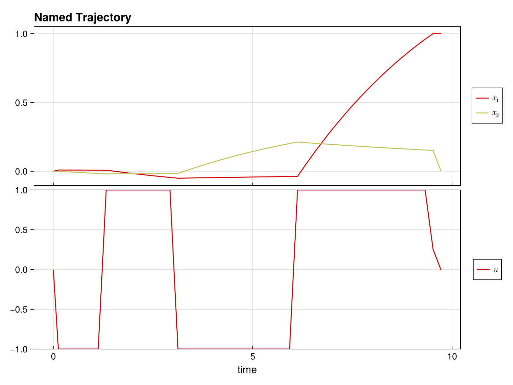

Quickstart Guide
Welcome to DirectTrajOpt.jl! This guide will get you up and running in minutes.
What is DirectTrajOpt?
DirectTrajOpt.jl solves trajectory optimization problems - finding optimal control sequences that drive a dynamical system from an initial state to a goal state while minimizing a cost function.
Installation
First, install the package:
using Pkg
Pkg.add("DirectTrajOpt")You'll also need NamedTrajectories.jl for defining trajectories:
using DirectTrajOpt
using NamedTrajectories
using LinearAlgebra
using CairoMakieA Minimal Example
Let's solve a simple problem: drive a 2D system from [0, 0] to [1, 0] with minimal control effort.
Step 1: Define the Trajectory
A trajectory contains your states, controls, and time information:
N = 50 # number of time steps
traj = NamedTrajectory(
(
x = randn(2, N), # 2D state
u = randn(1, N), # 1D control
Δt = fill(0.1, N), # time step
);
timestep = :Δt,
controls = :u,
initial = (x = [0.0, 0.0],),
final = (x = [1.0, 0.0],),
bounds = (Δt = (0.05, 0.2), u = 1.0),
)N = 50, (x = 1:2, u = 3:3, → Δt = 4:4)Step 2: Define the Dynamics
Specify how your system evolves. For bilinear dynamics ẋ = (G₀ + u₁G₁) x:
G_drift = [-0.1 1.0; -1.0 -0.1] # drift term
G_drives = [[0.0 1.0; 1.0 0.0]] # control term
G = u -> G_drift + sum(u .* G_drives)
integrator = BilinearIntegrator(G, :x, :u, traj)BilinearIntegrator: :x = exp(Δt G(:u)) :x (dim = 2)Step 3: Define the Objective
What do we want to minimize? Let's penalize control effort:
obj = QuadraticRegularizer(:u, traj, 1.0)QuadraticRegularizer on :u (R = [1.0], all)Step 4: Create and Solve
Combine everything into a problem and solve:
prob = DirectTrajOptProblem(traj, obj, integrator)DirectTrajOptProblem
Trajectory
Timesteps: 50
Duration: 4.9
Knot dim: 4
Variables: x (2), u (1), Δt (1)
Controls: u, Δt
Objective: QuadraticRegularizer on :u (R = [1.0], all)
Dynamics (1 integrators)
BilinearIntegrator: :x = exp(Δt G(:u)) :x (dim = 2)
Constraints (4 total: 2 equality, 2 bounds)
EqualityConstraint: "initial value of x"
EqualityConstraint: "final value of x"
BoundsConstraint: "bounds on Δt"
BoundsConstraint: "bounds on u"The problem summary shows the trajectory, objective, dynamics, and constraints:
probDirectTrajOptProblem
Trajectory
Timesteps: 50
Duration: 4.9
Knot dim: 4
Variables: x (2), u (1), Δt (1)
Controls: u, Δt
Objective: QuadraticRegularizer on :u (R = [1.0], all)
Dynamics (1 integrators)
BilinearIntegrator: :x = exp(Δt G(:u)) :x (dim = 2)
Constraints (4 total: 2 equality, 2 bounds)
EqualityConstraint: "initial value of x"
EqualityConstraint: "final value of x"
BoundsConstraint: "bounds on Δt"
BoundsConstraint: "bounds on u"solve!(prob; max_iter = 100, verbose = false)This is Ipopt version 3.14.19, running with linear solver MUMPS 5.9.0.
Number of nonzeros in equality constraint Jacobian...: 776
Number of nonzeros in inequality constraint Jacobian.: 0
Number of nonzeros in Lagrangian Hessian.............: 1254
Total number of variables............................: 196
variables with only lower bounds: 0
variables with lower and upper bounds: 100
variables with only upper bounds: 0
Total number of equality constraints.................: 98
Total number of inequality constraints...............: 0
inequality constraints with only lower bounds: 0
inequality constraints with lower and upper bounds: 0
inequality constraints with only upper bounds: 0
iter objective inf_pr inf_du lg(mu) ||d|| lg(rg) alpha_du alpha_pr ls
0 1.2560361e-01 3.45e+00 9.80e-02 0.0 0.00e+00 - 0.00e+00 0.00e+00 0
1 1.5978130e-01 8.42e-01 2.01e+00 -1.1 2.91e+00 - 4.74e-01 7.74e-01h 1
2 1.3097556e-01 6.37e-01 1.47e+00 -0.8 1.40e+00 - 3.33e-01 2.34e-01f 1
3 1.1725420e-01 5.43e-01 1.35e+00 -1.0 3.89e+00 - 2.55e-01 1.37e-01f 1
4 1.2346095e-01 4.23e-01 4.52e+00 -1.1 1.36e+00 0.0 5.02e-01 2.23e-01h 1
5 1.3381918e-01 3.61e-01 3.93e+00 -4.0 3.24e+00 -0.5 1.81e-01 1.47e-01h 1
6 1.5161496e-01 2.06e-01 6.18e+00 -0.9 3.66e+00 - 2.84e-01 4.09e-01f 1
7 1.8074432e-01 1.58e-01 4.30e+00 -0.6 2.92e+00 - 5.46e-01 2.35e-01h 1
8 2.5671893e-01 1.08e-01 5.72e+00 -0.9 1.46e+00 - 7.19e-01 3.21e-01h 1
9 3.5343555e-01 7.42e-02 5.04e+00 -1.3 2.47e+00 - 3.37e-01 3.18e-01h 1
iter objective inf_pr inf_du lg(mu) ||d|| lg(rg) alpha_du alpha_pr ls
10 4.2962804e-01 5.76e-02 5.27e+00 -4.0 2.34e+00 -1.0 2.34e-01 2.26e-01h 1
11 4.6597631e-01 5.45e-02 2.71e+01 -0.2 1.14e+01 -0.5 5.91e-01 6.06e-02f 1
12 6.3951880e-01 3.68e-02 7.96e+01 -0.2 9.23e-01 - 9.37e-01 3.71e-01h 1
13 6.8561516e-01 3.52e-02 6.10e+02 0.5 4.16e+00 - 1.00e+00 8.12e-02h 1
14 8.3203418e-01 2.84e-02 1.83e+03 0.5 2.66e+00 - 1.00e+00 2.78e-01h 1
15 8.4764533e-01 2.82e-02 7.86e+04 2.0 7.72e+01 0.8 9.41e-01 6.47e-03h 1
16 8.9693023e-01 2.59e-02 8.57e+05 2.6 2.70e+00 - 1.00e+00 8.13e-02h 1
17 9.1134301e-01 2.54e-02 3.21e+06 2.7 1.10e+01 - 1.30e-01 2.08e-02h 1
18 9.2145377e-01 2.50e-02 1.76e+08 2.7 1.79e+00 - 1.00e+00 1.67e-02h 1
19 9.2405625e-01 2.49e-02 4.16e+10 2.7 2.11e+00 - 1.00e+00 4.22e-03h 1
iter objective inf_pr inf_du lg(mu) ||d|| lg(rg) alpha_du alpha_pr ls
20 9.2411328e-01 2.40e-02 2.46e+13 2.7 1.17e+00 - 1.00e+00 1.67e-03H 1
21 9.2437922e-01 7.60e-02 7.26e+13 2.7 9.61e-01 - 1.00e+00 7.78e-02h 3
22r 9.2437922e-01 7.60e-02 7.33e+02 2.7 0.00e+00 - 0.00e+00 2.59e-07R 8
23r 9.2435287e-01 5.14e-02 9.22e+00 -3.4 6.13e-01 - 9.87e-01 9.34e-01f 1
24r 9.2435287e-01 5.14e-02 9.99e+02 -1.3 0.00e+00 - 0.00e+00 4.10e-07R 4
25r 6.7647280e-01 1.75e-02 2.50e+02 1.2 3.43e+01 - 1.00e+00 1.49e-03f 1
26 6.9635638e-01 1.51e-02 6.78e-01 -2.2 1.80e-01 - 4.73e-01 1.36e-01h 1
27 7.3981142e-01 1.32e-02 1.07e+00 -4.0 2.31e-01 - 1.19e-01 1.28e-01h 1
28 8.0463982e-01 1.10e-02 6.52e+00 -2.7 4.21e-01 - 2.42e-01 1.66e-01h 1
29 8.3965912e-01 1.02e-02 1.95e+289 -2.4 3.67e+00 - 2.47e-01 6.98e-02h 1
iter objective inf_pr inf_du lg(mu) ||d|| lg(rg) alpha_du alpha_pr ls
30 8.3145538e-01 1.02e-02 1.95e+289 -2.7 2.16e+287 - 2.28e-289 6.90e-289h 1
31 8.2070637e-01 1.02e-02 1.95e+289 -2.7 2.34e+287 - 8.41e-289 7.73e-289h 1
32 8.0208021e-01 1.02e-02 1.95e+289 -2.7 2.09e+287 - 1.80e-288 1.54e-288h 1
33 7.7216649e-01 1.02e-02 1.95e+289 -2.7 1.87e+287 - 2.96e-288 3.01e-288h 1
34r 7.7216649e-01 1.02e-02 9.99e+02 -2.0 0.00e+00 - 0.00e+00 7.74e-289R 2
35r 5.4019878e-01 1.16e-02 9.90e+02 0.9 9.13e+01 - 1.11e-02 1.31e-03f 1
36r 5.4443583e-01 6.57e-03 9.61e+02 -1.0 4.52e+00 - 5.66e-02 9.62e-03f 1
37r 5.4443583e-01 6.57e-03 9.99e+02 -2.2 0.00e+00 - 0.00e+00 3.83e-290R 2
38r 4.9163079e-01 5.32e-03 8.38e+02 0.5 3.41e+02 - 2.87e-01 2.21e-03f 1
39r 4.9163079e-01 5.32e-03 9.99e+02 -2.3 0.00e+00 - 0.00e+00 2.56e-289R 2
iter objective inf_pr inf_du lg(mu) ||d|| lg(rg) alpha_du alpha_pr ls
40r 5.0081859e-01 5.26e-03 5.92e+02 0.3 3.01e+02 - 1.00e+00 3.86e-04f 1
41r 5.2782401e-01 6.12e-03 9.52e+01 -0.7 1.68e-01 - 7.74e-01 8.08e-01f 1
42r 5.3582936e-01 6.30e-03 4.05e+01 -1.0 4.05e-03 4.0 1.00e+00 1.00e+00f 1
43r 5.3899484e-01 8.01e-03 5.07e+01 -0.7 7.09e-03 3.5 1.00e+00 7.18e-01f 1
44r 5.5801656e-01 1.79e-02 2.44e+01 -0.8 2.30e-02 3.0 9.99e-01 1.00e+00f 1
45r 5.6601979e-01 2.35e-02 2.10e+02 -0.9 1.28e-01 2.6 7.74e-01 1.71e-01f 1
46r 6.0771287e-01 2.00e-02 1.85e+01 -0.9 2.81e-02 2.1 1.00e+00 8.72e-01f 1
47r 6.5985492e-01 1.81e-02 2.81e+00 -1.0 7.04e-02 1.6 9.99e-01 1.00e+00f 1
48r 7.0001280e-01 1.67e-02 5.39e+01 -1.6 2.91e-01 1.1 9.67e-01 4.77e-01f 1
49r 8.1250891e-01 1.23e-02 1.92e+01 -2.4 4.49e-01 0.7 1.00e+00 8.38e-01f 1
iter objective inf_pr inf_du lg(mu) ||d|| lg(rg) alpha_du alpha_pr ls
50r 8.3847297e-01 1.13e-02 1.17e+02 -2.3 9.48e-01 0.2 1.00e+00 2.66e-01f 1
51r 8.7232260e-01 1.04e-02 2.88e+01 -3.3 3.51e-01 0.6 1.00e+00 3.94e-01f 1
52r 8.9163813e-01 1.01e-02 4.50e+01 -3.0 6.66e-01 0.1 1.00e+00 2.81e-01f 1
53r 8.9878007e-01 9.88e-03 6.32e+01 -3.1 3.12e+00 -0.3 1.62e-01 9.03e-02f 1
54r 9.0391807e-01 9.82e-03 1.55e+01 -2.9 2.14e-01 0.1 1.00e+00 1.78e-01f 1
55r 9.0721143e-01 9.79e-03 9.77e+00 -2.2 2.05e+00 -0.4 8.67e-01 7.59e-01f 1
56r 9.0775015e-01 9.75e-03 2.00e+01 -2.3 3.11e-01 0.0 1.00e+00 5.04e-02f 1
57r 9.1419867e-01 9.52e-03 1.27e+01 -2.3 2.43e-01 - 1.00e+00 4.85e-01f 1
58r 9.3859255e-01 8.94e-03 9.94e-02 -3.6 3.07e-02 - 1.00e+00 1.00e+00f 1
59r 9.4073302e-01 8.91e-03 1.23e-02 -4.0 2.52e-03 - 1.00e+00 1.00e+00f 1
iter objective inf_pr inf_du lg(mu) ||d|| lg(rg) alpha_du alpha_pr ls
60r 9.4072367e-01 8.92e-03 4.85e-07 -4.0 1.30e-04 - 1.00e+00 1.00e+00h 1
Number of Iterations....: 60
(scaled) (unscaled)
Objective...............: 9.4072379025122355e-01 9.4072379025122355e-01
Dual infeasibility......: 1.8695828372048147e+00 1.8695828372048147e+00
Constraint violation....: 8.9150746156719755e-03 8.9150746156719755e-03
Variable bound violation: 0.0000000000000000e+00 0.0000000000000000e+00
Complementarity.........: 1.0000000000949199e-04 1.0000000000949199e-04
Overall NLP error.......: 1.8695828372048147e+00 1.8695828372048147e+00
Number of objective function evaluations = 88
Number of objective gradient evaluations = 40
Number of equality constraint evaluations = 88
Number of inequality constraint evaluations = 0
Number of equality constraint Jacobian evaluations = 67
Number of inequality constraint Jacobian evaluations = 0
Number of Lagrangian Hessian evaluations = 61
Total seconds in IPOPT = 7.628
EXIT: Converged to a point of local infeasibility. Problem may be infeasible.Step 5: Access the Solution
Let's look at the results.
plot(prob.trajectory)
The optimized trajectory is stored in prob.trajectory:
println("Final state: ", prob.trajectory.x[:, end])
println("Control norm: ", norm(prob.trajectory.u))Final state: [1.0, 0.0]
Control norm: 6.85966281121361What You Can Do
- Multiple objectives: Combine regularization, minimum time, terminal costs
- Flexible dynamics: Linear, bilinear, time-dependent systems
- Add constraints: Bounds, path constraints, custom nonlinear constraints
- Smooth controls: Penalize derivatives for smooth, implementable controls
- Free time: Optimize trajectory duration
This page was generated using Literate.jl.